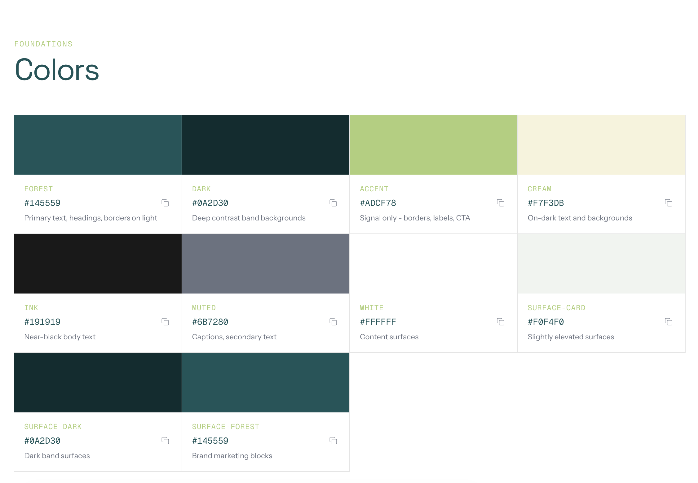
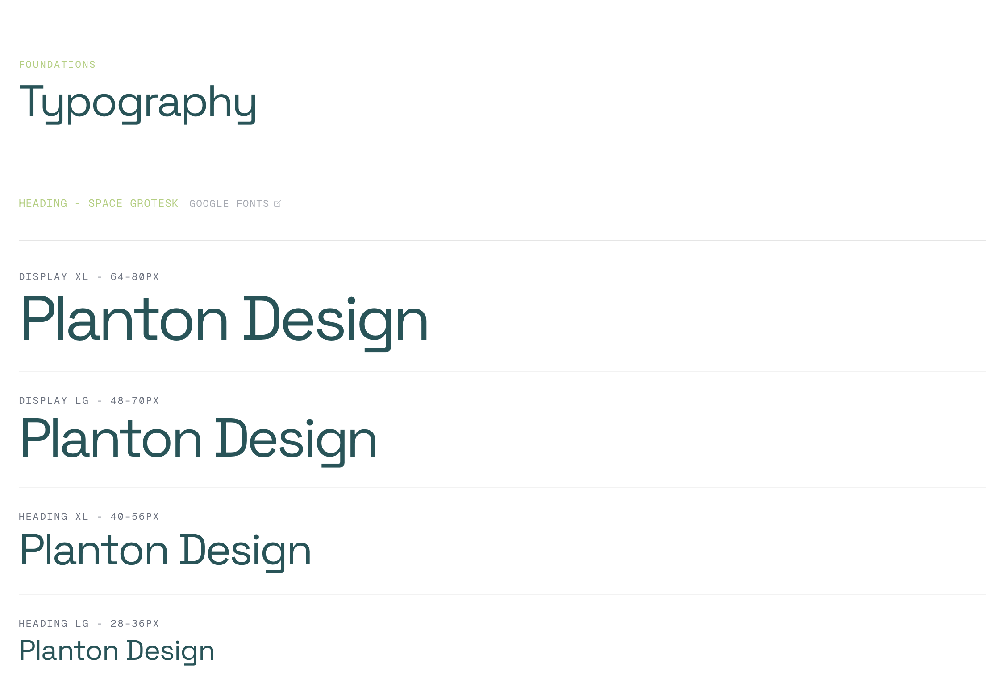
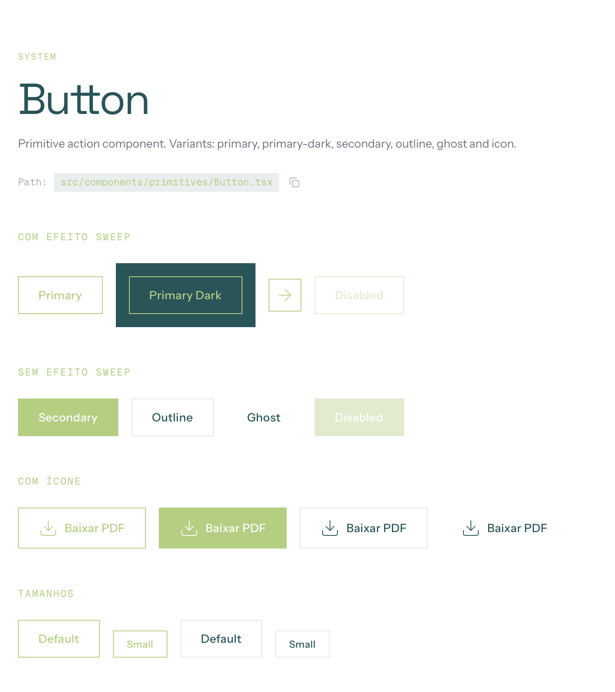
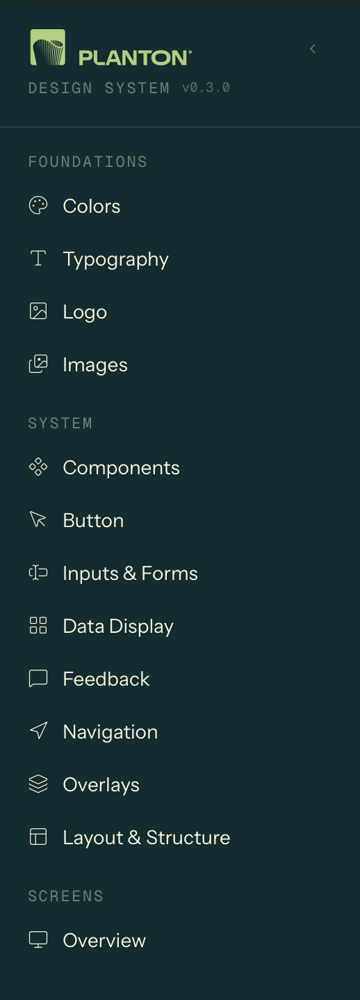
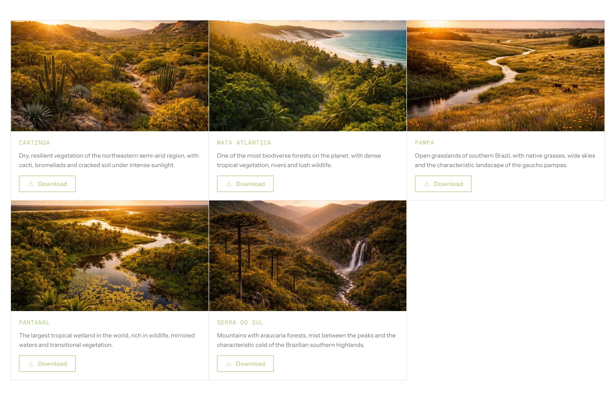

From Editorial Brand to Product System: Building Planton UI
2026 · Case Study · 12 min read
Planton's visual language is built on restraint: 1px borders instead of shadows, accent green reserved strictly for action signals, and a serif typeface that only appears in the brand's emotional register (testimonials and taglines). The interface reads like a financial newspaper redesigned by someone who grew up in a rainforest. Three colors. No shadows. Sharp corners everywhere.
None of this was encoded anywhere. The brand existed as one designer's implicit decisions: fragile, undocumented, and impossible to hand off.
When the product needed to expand into Planton Academy, a B2B learning platform for ESG and sustainability, the risk became concrete: every new feature would either dilute these constraints into generic SaaS patterns, or require the original designer to manually enforce them. Neither scales.
I extracted the logic behind these choices and encoded them as system primitives: tokens, components, rules, and documentation that enforce the brand's editorial identity at the component level.
5 custom primitives · 38 adapted components · 12-step auth flow · 4 content types · full dark mode in oklch · in-app documentation with component registry
1. The Problem
The challenge was not creating more components. It was defining which parts of the brand were structural enough to become enforceable system rules, and which were surface-level preferences that could flex.
Planton's visual identity relied on specific constraints:
- Borders over shadows
- No box-shadow vocabulary. Depth is communicated through 1px lines at low opacity, visible but never heavy. Structure is explicit, not simulated.
- Color restraint as institutional signal
- Three meaningful colors: forest teal (#145559), accent lime (#ADCF78), and cream (#F7F3DB). The accent never fills large surfaces. It only appears at the edge of interaction: hover bars, button outlines, labels.

- Typography carries identity, not color
- Four typefaces with strict separation: Space Grotesk for headlines with tight negative tracking, Instrument Sans for body, Geist Mono for utility labels and eyebrows, and Roca (serif) reserved exclusively for the emotional register. Testimonial quotes and brand taglines only.

- Sharp geometry
- Zero border-radius on content surfaces. Cards, grids, and panels are rectangles. The only softness appears on small utility elements.
Without clear systemization, these principles would fragment the moment a second designer or developer touched the product. Every new screen would become a negotiation between brand intent and implementation speed. Speed would always win.
2. The Audit: Extracting the Design Language
Before building anything, I reverse-engineered the live brand into a structured framework. The result was a document called DESIGN_LANGUAGE.md, a 350-line source of truth organized in three layers:
Layer 1: Surface UI (what you see)
Direct observations from the existing product: the minimal palette, the border-based separation, the three-step responsive padding scale (24px → 48px → 96px), the absence of radius. Raw facts, no interpretation.
Layer 2: Design Patterns (recurring structures)
The patterns that repeat across pages: the Grid Frame (a max-w-[1400px] container with border-l and border-r creating an editorial column structure), the Eyebrow + Headline + Body three-tier text stack, the Sweep CTA (accent-bordered button that fills left-to-right on hover), and the Hover Indicator Bar (a 3px vertical accent strip that reveals on card hover).
Layer 3: Design Principles (why it works)
The philosophy behind the choices: "Editorial layout, not app layout." "Color restraint as institutional signal." "Typography is the personality layer." These principles became the decision framework for every component built afterward. When in doubt, refer to Layer 3.
The target tone, captured in one line from the document:
"The product should feel like a Goldman Sachs report redesigned by someone who grew up in a rainforest."
This audit was the most important step of the project. It made every subsequent decision traceable to a documented principle, not to personal preference.
3. The System: Tokens and Primitives
Token architecture
The token layer operates at four levels:
- 1. Brand tokens
- Raw palette values, motion easings (custom curves for directional sweep and lift), and duration values for consistent timing across the system.
- 2. Surface tokens
- Semantic mappings for backgrounds that automatically invert in dark mode. A component built on --surface-default works correctly in both themes without any overrides.
- 3. Semantic system tokens
- Success, warning, error, and info states with foreground, surface, and border variants each.
- 4. Dark mode overrides
- All semantic colors use the oklch() color space for perceptual uniformity, ensuring colors feel equally balanced regardless of hue.
This layered approach means a new feature inherits brand-correct colors, spacing, and motion by default, reducing visual drift without requiring manual review.
See the full token and variable structure in Figma ↗
The primitive/commodity split
Not all components carry brand identity equally. The system separates them explicitly:
Primitives (custom-built, brand-carrying):
- Button
- The system's most visible interaction. Accent border, zero radius, directional sweep animation on hover. 6 variants: primary, primary-dark, secondary, outline, ghost, icon.

- Heading
- Uses Space Grotesk with fluid responsive sizing, tight negative tracking, surface-aware color. Every heading in the system passes through this component.
- Body
- Uses Instrument Sans with relaxed line-height and surface-aware text color.
- Eyebrow
- Geist Mono, small uppercase with wide tracking. Functions as a category signal, not a label.
- Label
- Geist Mono, small uppercase. Used for utility text and metadata.
These five components encode the typographic hierarchy and interaction language that make Planton recognizable. Brand rules are enforced by default. Not by documentation, but by the component contract itself.
Commodity (shadcn/Radix, adapted via tokens): Input, Textarea, Select, Checkbox, Radio Group, Dialog, Calendar, Tabs, Accordion. 38 components total. These use the token layer for theming but preserve their standard behavior. They don't need to carry brand identity; they need to work.
This split was a deliberate trade-off: invest design effort only where it creates differentiation. Let infrastructure handle the rest. The result is a system where brand identity is concentrated in 5 components, and the other 38 just work: accessible, tested, and visually consistent through the token layer.
4. Architecture and Governance
Layer structure
src/
├── components/
│ ├── primitives/ → Brand-carrying (Button, Heading, Body, Eyebrow, Label)
│ ├── ui/ → Composed (Card, Surface, TopNotificationBar, CourseGrid)
│ ├── shadcn/ → Commodity (38 components via shadcn/Radix)
│ └── navigation/ → Navigation shell (Navbar, Sidebar, Footer)
├── screens/ → Real product screens (Academy auth, home, trail, content)
├── styles/theme.css → All tokens (brand, surface, semantic, dark mode)
└── lib/components-registry.ts → Typed component indexThe component registry
The system documents itself. components-registry.ts is a typed index that maps every component to its category, description, and source file path. This registry drives the design system's navigation UI. Components are browsable as a structured catalog, not a flat list.

Each component page displays live interactive examples, the source file path for developer handoff, and variant and prop documentation. A new developer joining the project can find, understand, and use any component without leaving the browser.
Adoption tools
A system that isn't used is documentation, not infrastructure. These features were designed to reduce friction between knowing the system exists and actually using it:
- Logo downloads
- Multiple formats (square, vertical, horizontal, with/without tagline), so marketing and product teams stop asking "where's the logo?"
- Color tokens with copy-to-clipboard
- Click a swatch, get the CSS variable or hex value. Eliminates the gap between design spec and implementation.
- Brazilian biome imagery
- 5 curated photos (Mata Atlantica, Pantanal, Caatinga, Pampa, Serra do Sul) available as brand-approved assets, reducing the need for external stock searches.

5. Application: Academy Product Screens
The system was not designed in abstraction. I applied it to real Academy product flows (authentication, content discovery, learning progression) to test whether the tokens, primitives, and patterns could survive the pressure of real product requirements, edge cases, and business logic.
5.1 Authentication Flow: 12 states, 3 business scenarios
The auth flow is a B2B onboarding system that handles domain validation, voucher-based access, and progressive profile completion across 12 states.
Each branch maps to a distinct business scenario: company has an active subscription (user is onboarded directly), company subscription is inactive (user enters a voucher code to reactivate), or domain is unknown (access denied with support redirect).
The background cycles through Brazilian biome photography with crossfade transitions, connecting the auth experience to the brand's environmental identity.
5.2 Home Screen: streaming-style content discovery
The Academy home uses a content model with 4 types: video, podcast, article, and guide. Each type renders through the same ContentCard component (4:5 aspect ratio) but with distinct visual treatments. Different image filters, overlays, and hover behaviors per type. Videos show a GIF preview on hover; non-video types receive a brand-tinted overlay to maintain visual cohesion across mixed content rows.
The hero section uses HLS video streaming with native Safari fallback, automatic carousel rotation, and Apple TV+ style progress pills. The transition between items coordinates a fade from static thumbnail to live video.
On desktop, the home layout splits into a 2/3 + 1/3 grid: "Continue watching" carousel on the left, in-progress learning trails with progress bars on the right, separated by a vertical border (not a shadow), consistent with the editorial grid language.
5.3 Trail Screen: learning progression with quiz and certification
The trail screen implements a complete learning management flow: sequential content consumption with status tracking, a quiz system with 3 attempts and 80% minimum score, and a certificate that unlocks after quiz completion.
The quiz has 4 distinct states: in progress (question-by-question with radio group selection), passed (success view with score and "Generate certificate" CTA), failed (warning with attempt counter and "Review content" CTA), and failed final (destructive alert after 3rd failed attempt).
The sidebar lists all trail contents with numbered items, status icons (not started / viewed / completed), and content type indicators. On mobile, the sidebar collapses and the content list appears below the player.
5.4 Content type adaptation
Each content type gets a dedicated player view: video (HLS embed), podcast (audio player), article (centered prose), and guide (PDF metadata with download). The system resolves content type at the component level. The consuming screen selects the right view component, and the layout adapts automatically. Adding a fifth content type would require one new view component, not changes across multiple screens.
6. Responsive Strategy
The system uses a mobile-first approach with one key architectural decision: the sidebar transforms from a persistent push layout (desktop) to an overlay panel (mobile), keeping navigation accessible without sacrificing content area.
Key responsive patterns: all heading sizes use fluid scaling with no fixed breakpoints for text. Content cards use responsive widths within horizontal carousels. Navigation shifts from hamburger trigger on mobile to breadcrumb trail on desktop. The trail screen sidebar becomes an inline content list below the player on mobile.
7. Trade-offs and Tensions
Editorial purity vs. streaming conventions
The design language specifies: no shadows, no scale transforms, no rounded corners on content surfaces. The ContentCard in Academy Home uses scale, shadow, and rounded corners on hover.
This was a deliberate exception. Content discovery in a streaming context relies on hover affordances that signal "this is selectable." The editorial grid approach (indicator bar, border darkening) didn't translate to thumbnail-based browsing. The trade-off: streaming sections follow platform conventions; editorial sections follow brand rules. The system accommodates both through different component contracts rather than forcing one philosophy everywhere.
Roca as voice layer, and its absence in the product
The design language defines Roca (serif) as the brand's emotional register. It only appears in testimonials and the footer tagline. The decision to keep Roca out of the Academy product was intentional: the learning platform needs to read as functional and credible, not editorial. But this means the Academy lacks the emotional warmth that Roca provides on the institutional site. The cost is real, and it's a design debt I'd revisit as the product matures.
shadcn as accelerator vs. differentiation risk
38 of the system's components are shadcn/Radix with token-level theming. They work. They're accessible, well-tested, and consistent. But they also look like shadcn. The primitive layer (Button, Heading, typography) creates enough differentiation at the surface, but deeper components (Dialog, Sheet, Select) are functionally identical to any shadcn project. If differentiation at the overlay level becomes important, these would need custom treatment. For now, the pragmatic choice is to invest design effort only where it creates visible brand value.
Specification vs. implementation gap
DESIGN_LANGUAGE.md defines behaviors that the current implementation doesn't fully enforce. Some visual consistency still depends on page-level className overrides rather than component contracts. For example, surfaces sometimes rely on the consuming page to set text color correctly, rather than the Surface component enforcing it. My next step would be to harden these rules into the component API, making it impossible to use a component incorrectly rather than relying on documentation to prevent misuse.
8. What the System Produces
In practice, this system enables a product team to build and scale a complex learning platform without losing visual coherence or brand integrity. A developer can ship a new feature using only the token layer and existing primitives, and the result will look like Planton, not like generic shadcn.
Tokens: 7 brand colors, 4 surfaces, 2 border modes, 4 semantic states (success/warning/error/info), motion easings and durations. Full dark mode in oklch().
Primitives: 5 custom components encoding typography and interaction identity.
Commodity UI: 38 shadcn/Radix components themed via token layer.
Navigation: Navbar with breadcrumbs + user menu, collapsible sidebar (push/overlay), footer.
Screens: Auth flow (12 states), Home (hero + content rows), Trail (sidebar + player + quiz + certificate), Content player (4 types).
Documentation: 54 pages, component registry with file paths, logo downloads, color copy-to-clipboard, biome image assets.
Positioning Summary
This is not "another design system." This is a system built to preserve a specific brand logic (editorial restraint, typographic hierarchy, color discipline) while enabling a product team to ship real features without diluting that logic.
The differentiator is the audit-first approach: extract principles before building components, then encode those principles as enforceable contracts. The screens are proof, not decoration. They exposed where the system held, where it needed exceptions, and where product reality demanded pragmatism over purity.
The strongest design systems are opinionated. This one is opinionated about restraint. And that restraint is what makes it scale.